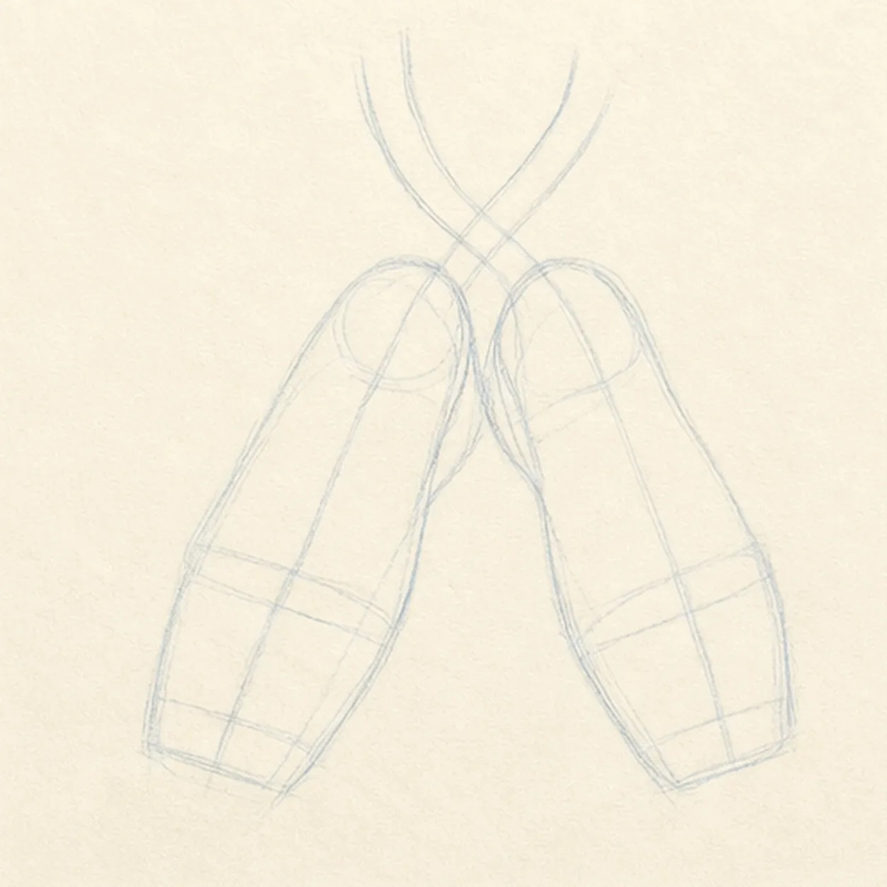
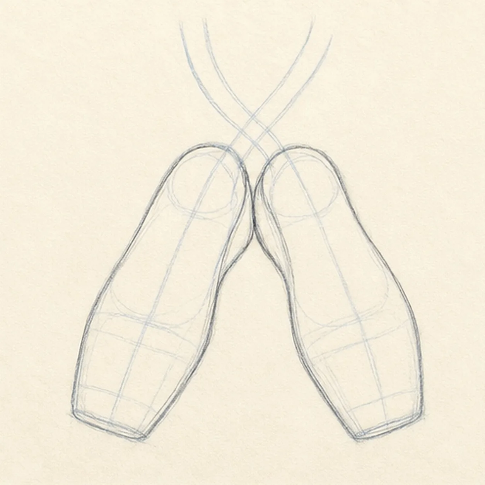
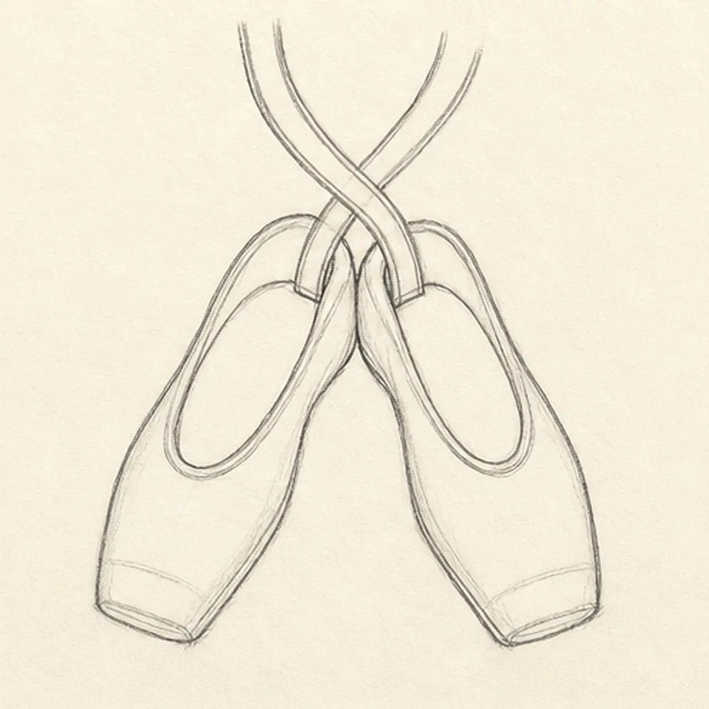
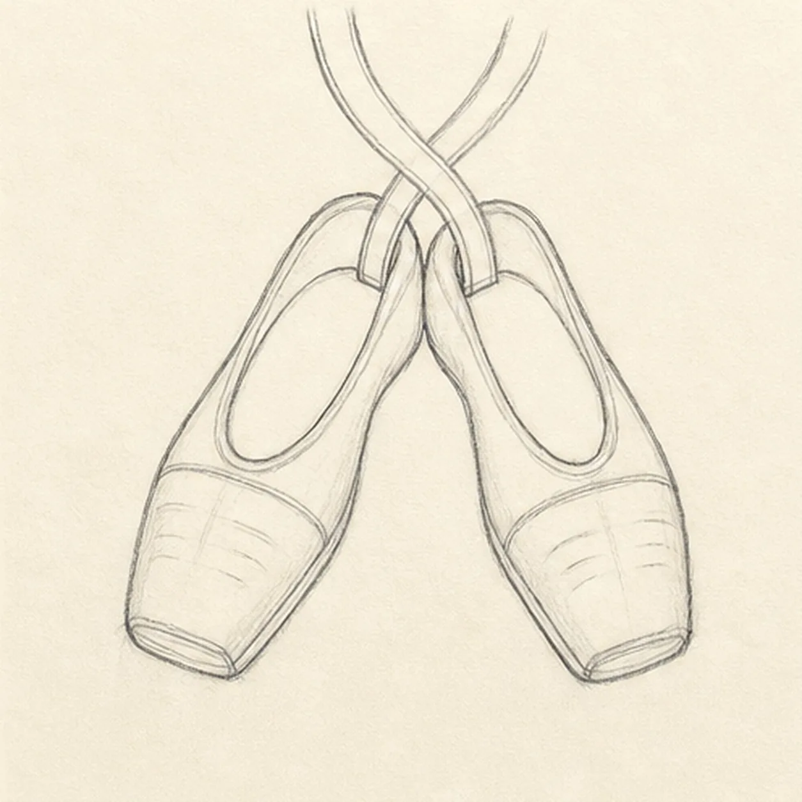
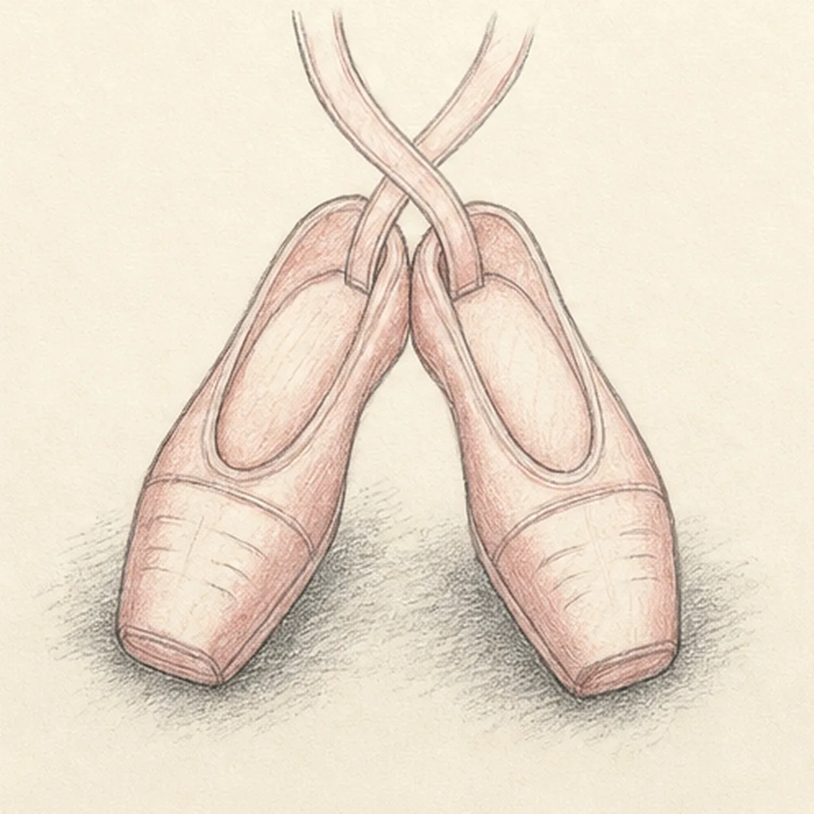

From the archive
Let's draw ballet slippers with ribbons
Treat this as one small practice round: build the subject lightly, notice the shapes, then darken only the lines that help the finished sketch.
-
01

Map the paired slippers and ribbons
Place two pale tapered shoe footprints on separate center axes, reserve their small heel overlap, and ghost exactly two ribbon paths that cross once above them.
Sketch tip: Ghost both long axes before touching down, then compare the wedge of empty paper between them. Keep the ribbon routes pale so their crossing can be adjusted without building dark detail underneath it.
-
02

Shape the pointe-shoe silhouettes
Wrap each guide with a tapered outer contour, gently squared toe box, narrow waist, and rounded heel while keeping the original angles and overlap.
Sketch tip: Rotate the page for each long outside edge and pull it in one relaxed pass. Compare the two toe widths, but let small differences keep the pair handmade.
-
03

Open the shoes and attach the ribbons
Add one oval opening and heel edge to each shoe, then turn the two pale ribbon routes into paired fabric edges attached at the inner sides.
Sketch tip: Squint at the negative space inside each opening before darkening it. At the ribbon crossing, stop the hidden edges cleanly instead of drawing through the top band.
-
04

Add seams and soft fabric folds
Draw one curved toe seam and a visible sole edge on each shoe, then add exactly three short fold lines near each established toe box.
Sketch tip: Use lighter pressure for the folds than for the seams. Aim every fold toward the center of its toe box so the fabric feels soft rather than cracked.
-
05

Lay in blush fabric and shadow
Pull dusty-rose pencil strokes along the existing shoe and ribbon forms, leave warm paper highlights, and add one broken graphite shadow beneath the pair.
Sketch tip: Follow the length of each ribbon with your color strokes, then curve them around the toe boxes. Leave a thin strip of paper uncolored instead of reaching for a white highlight.
-
06
Refine the graceful finish
Strengthen the keeper contours and clarify the established two shoes, two ribbon bands, openings, toe seams, sole edges, folds, blush texture, highlights, overlap, and ground shadow.
Sketch tip: Count two shoes, trace each ribbon from its attachment through the single crossing, and stop while the paper still glows. Your ribbon curves can be looser or tighter, but adding a bow, extra ribbons, legs, or a dancer would turn this into a different lesson.
![Handmade graphite and restrained colored-pencil sketch of one diagonal shooting star with a small warm-yellow round head on the page right and exactly two tapered yellow wake bands trailing toward the upper left, exactly three small open-paper sky stars, two layered indigo-blue hill ridges, exactly five dark foreground pine trees in varied heights, dense directional graphite night-sky hatching, open warm-paper glow around the meteor and stars, broken rock-and-grass foreground texture, and visible pencil tooth](../assets/shooting-star-over-pine-hills-finished-v1.webp)
![Handmade graphite and restrained colored-pencil sketch of one generic face-free school bus in a front-left three-quarter view with one broad dark windshield, one folding entry-door window, exactly four receding side passenger windows, exactly two visible wheels, two headlights, exactly three muted-red roof marker lamps, one side mirror, two dark horizontal safety bands, one simple front grille and bumper, several small panel seams, tactile directional hatching, school-bus-yellow body color, cool-gray glass and wheel values, open paper highlights, and one broken graphite ground shadow](../assets/school-bus-three-quarter-view-finished-v1.webp)